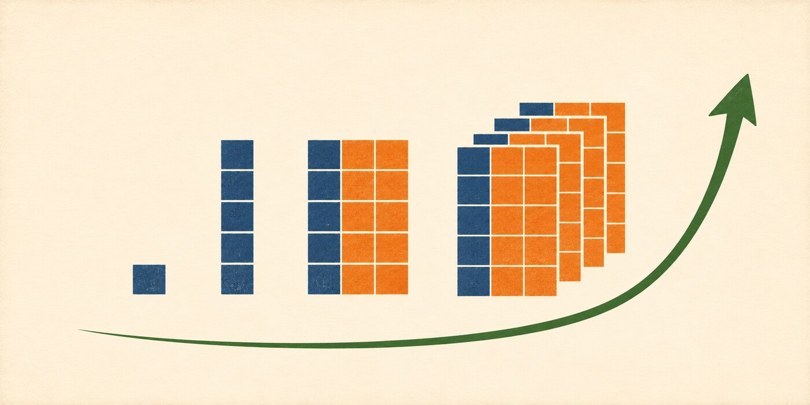
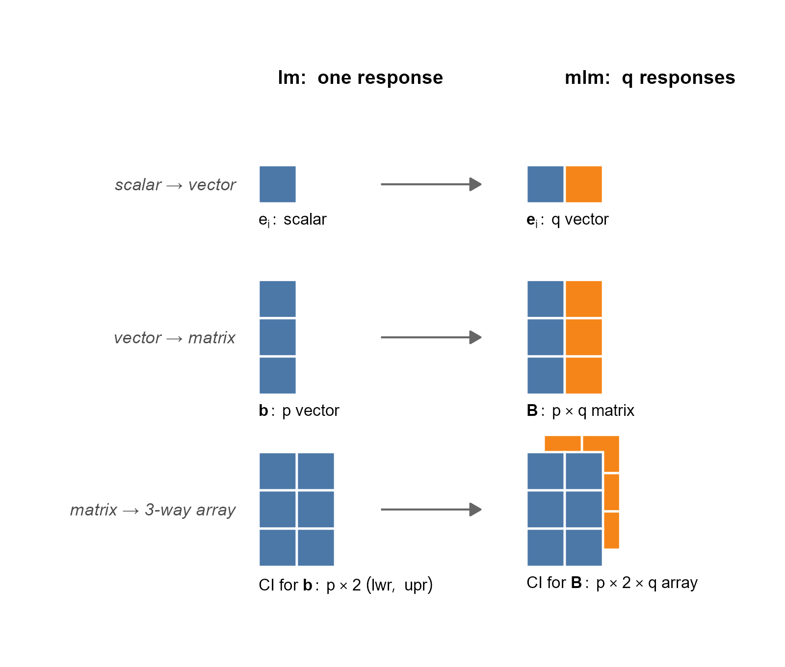
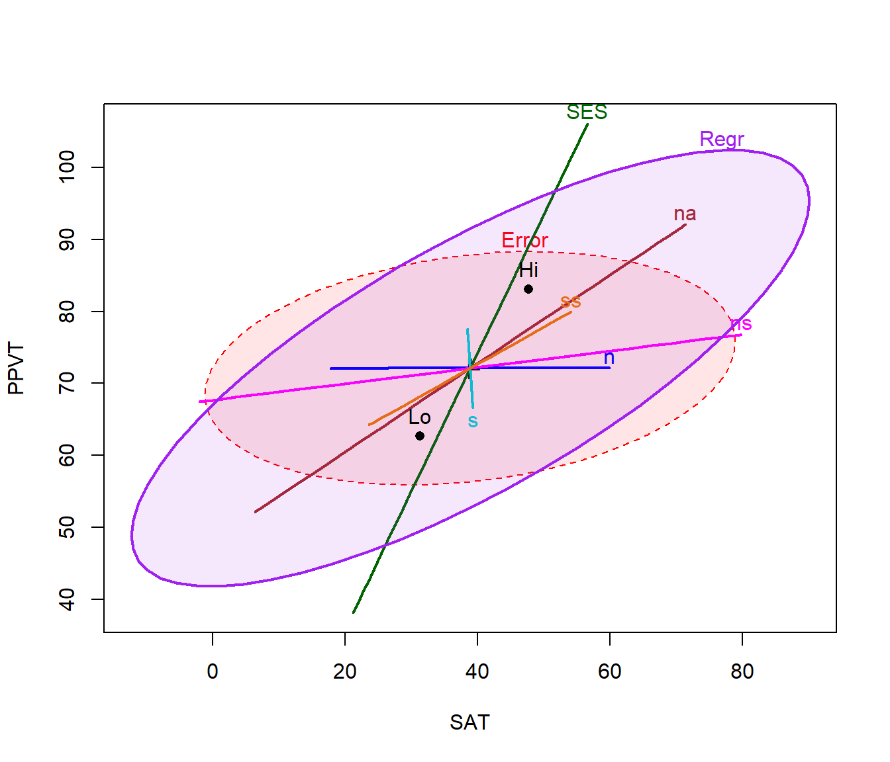
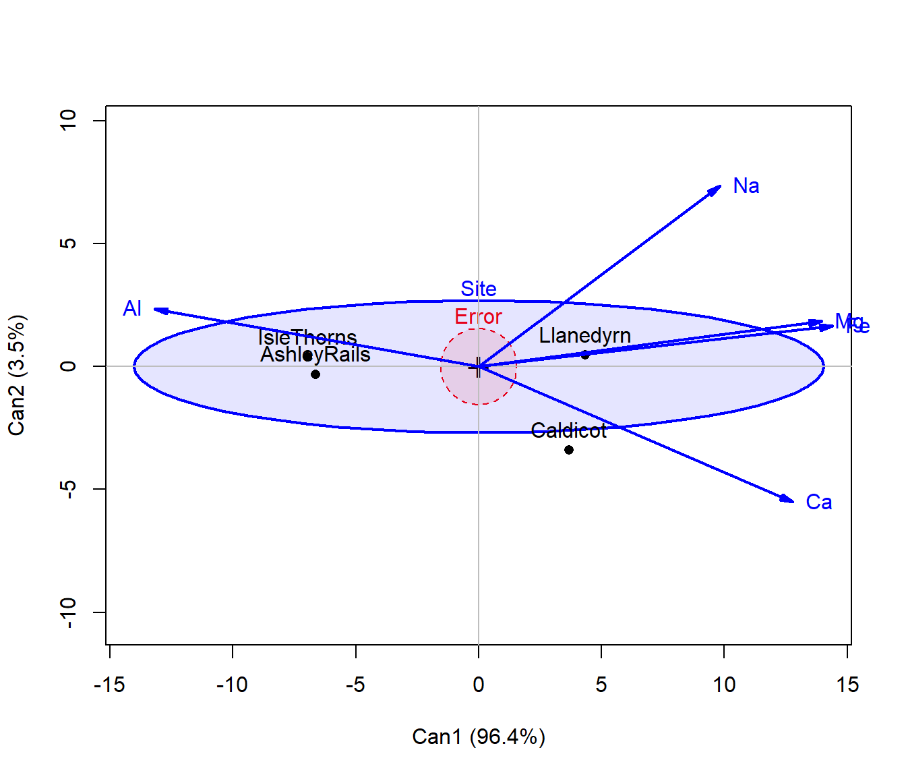
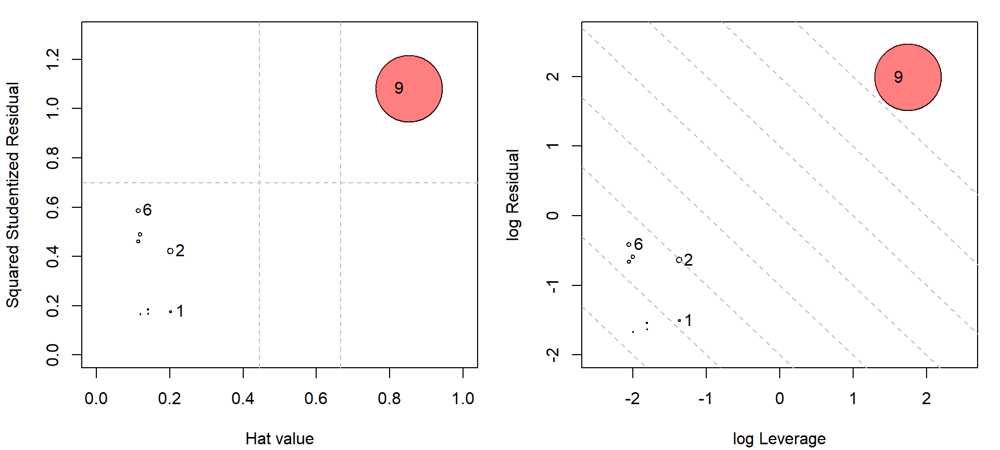
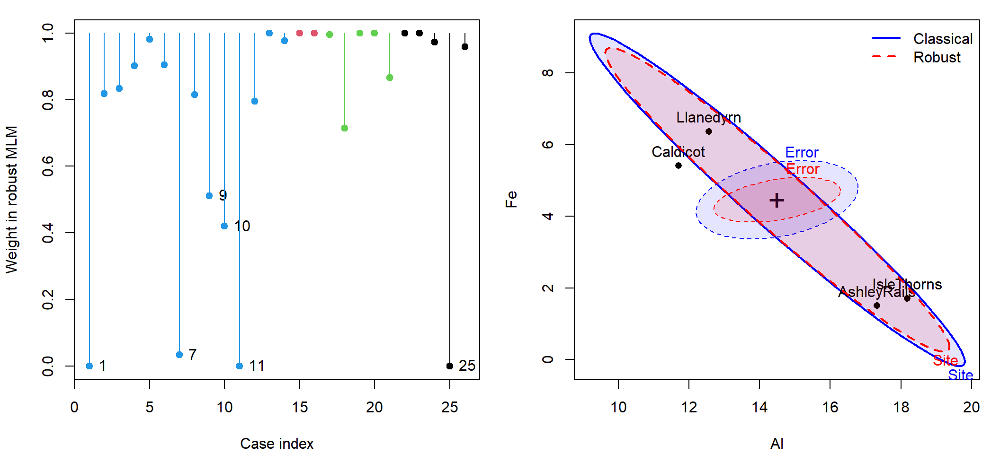
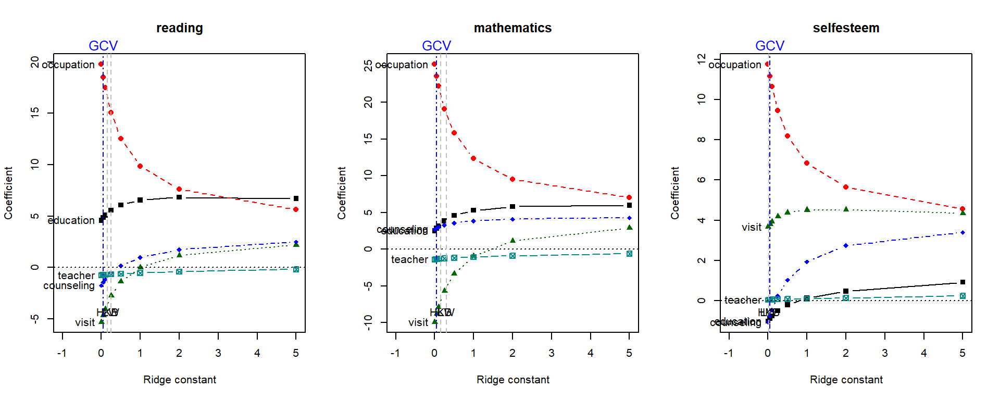
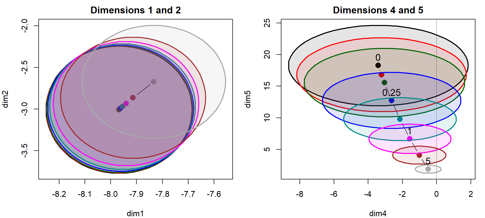
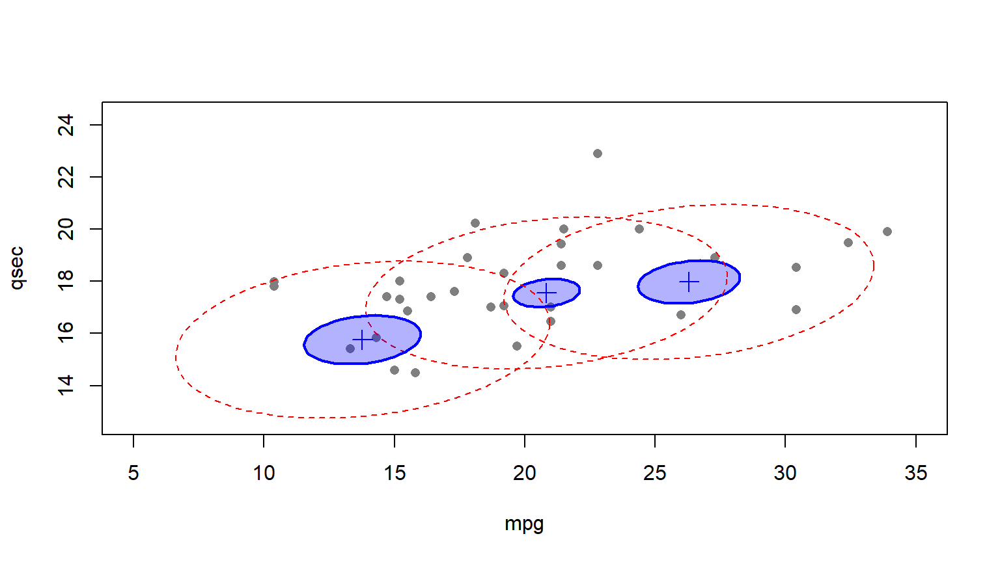

fit <- lm(cbind(mpg, qsec) ~ hp + wt, data = mtcars)
class(fit)[1] "mlm" "lm" lm() Methods to "mlm"lm() call as a univariate one, but many of the methods built around lm objects stop working, or quietly do something univariate. The underlying issue is that every object gains a dimension. This post describes what I’ve learned extending lm methods to mlm in the heplots, candisc, mvinfluence and genridge packages.

R makes it remarkably easy to fit a multivariate linear model. You don’t need a special function. You just give lm() a matrix of responses instead of a single one:
fit <- lm(cbind(mpg, qsec) ~ hp + wt, data = mtcars)
class(fit)[1] "mlm" "lm" The result is an object of class "mlm" that also inherits from "lm". That second class is a promise, or at least a hope: anything that works for a linear model should work here too. So, as you would for any regression, you ask for the diagnostic plots:
plot(fit)Error:
! 'plot.mlm' is not implemented yetWell, that’s honest, at least. Other functions fail less gracefully. Several old friends from the car package stop with messages that tell you nothing about why:
car::avPlots(fit)Error in `complete.cases()`:
! not all arguments have the same lengthcar::vif(fit)Error in `if (names(coefficients(mod)[1]) == "(Intercept)") ...`:
! argument is of length zeroThe more interesting cases are the ones that don’t fail, but don’t give you anything useful: cooks.distance() runs without a murmur and gives you a Cook’s D for each case, separately for each response:
head(cooks.distance(fit), 4) mpg qsec
Mazda RX4 1.589652e-02 0.0454756076
Mazda RX4 Wag 5.464779e-03 0.0280809974
Datsun 710 2.070651e-02 0.0003741428
Hornet 4 Drive 4.724822e-05 0.0051368087That’s two univariate answers to what was a multivariate question: which cases have an undue influence on the model as a whole?
summary(fit) does the same thing, returning a list of separate regression summaries, one per response, as if you’d called lm() twice.The question of multivariate influence is now largely solved in my mvinfluence package, which was part of my learning curve for the larger question I’m addressing here.
In short, the multivariate linear model is easy to fit yet hard to see.
The model syntax extension in lm() is trivial & expressive: y becomes cbind(y1, y2, ...). You only need to understand the idea of “binding” rows or columns into a matrix. But cbind() and rbind() also work for a sequence of vectors, matrices and dataframes. The same formula language stretches further in the relatives of lm(): | indicates grouping or conditioning in lme4 and lattice, and glm() adds family = for non-Gaussian responses. It’s easy to think of all these as one general class, and write the model syntax without breaking a sweat.
The matrix algebra extension is elegant & beautiful: \(\mathbf{y}_{n \times 1} \rightarrow \mathbf{Y}_{n \times q}\) — it largely just works!
heplots::plot.boxM() draws \(\ln |\mathbf{S}|\) as a dot for each group and one for the pooled matrix, so you see which groups stand out, not just whether they differ (Friendly and Sigal 2020). But why stop at the determinant, when there are other ways to say how big a matrix is? Ah, but that’s another story.Figure 1 puts this in a wider frame. It classifies the familiar linear-model methods by the number and kind of predictors and responses. For one response (\(q = 1\)), we have a rich toolkit of graphical methods: added-variable plots, influence plots, effect plots and the rest. For several quantitative responses (\(q > 1\)), the methods are just as well developed on the statistical side (multivariate regression, MANOVA, canonical correlation), but the graphics have been thin. Mostly, the results arrive as tables of multivariate test statistics.

Why should this be so hard? The statistics of the multivariate linear model have been settled for more than half a century. The trouble is more mundane, and I think it’s worth naming, because it explains nearly every problem I’ve run into in developing these ideas.
It calls to mind the cognitive problems “A. Square” encountered in Edwin Abbott’s Flatland (Abbott 1884), when a Sphere entered the story and taught him how to think in one more dimension. I’ve told that story in my Visualizing Multivariate Data and Models in R book (Friendly 2024).
In R, when the response goes from a vector y to a matrix Y, every object the model produces gains a dimension:
Figure 2 shows this ladder for a model with \(p = 3\) coefficients and \(q = 3\) responses.

lm to mlm, every object gains a dimension. Blue cells are what a univariate model gives you; orange cells are added by the other two responses. The residual for a case becomes a vector, the coefficient vector becomes a matrix, and the table of confidence intervals becomes a 3-way array.
That extra dimension shows up first in what a function returns, and then in every method that has to consume it: print(), summary(), confint(), predict(), and of course plot().
Code written for one shape is handed the next one up, and it has to do something with it. The challenge has always been to make that something useful in a multivariate context.
Base R takes several different approaches. Sometimes it simply returns the bigger object: coef(fit) is the \(3 \times 2\) matrix you’d expect. Sometimes it flattens the extra dimension away. confint() strings the responses and coefficients together into one long list of intervals:
confint(fit) 2.5 % 97.5 %
mpg:(Intercept) 33.95738245 40.49715778
mpg:hp -0.05024078 -0.01330512
mpg:wt -5.17191604 -2.58374544
qsec:(Intercept) 17.45146289 20.19970760
qsec:hp -0.03507046 -0.01954879
qsec:wt 0.39771199 1.48535274The broom package does much the same thing in tidy form, stacking the responses in a long data frame with a response column. That’s perfectly convenient for a table, but in both cases the answers for mpg and qsec sit side by side as if they had nothing to do with each other.
And sometimes R just refuses, as it currently does for predict():
predict(fit, newdata = mtcars[1:2, ], se.fit = TRUE)Error in `predict.mlm()`:
! the 'se.fit' argument is not yet implemented for "mlm" objectsI have some sympathy for that last one.
For a univariate model, the standard error of a predicted value is a single number, and a confidence interval is a pair of numbers, lwr and upr.
For an mlm, the uncertainty of each predicted point is a \(q \times q\) covariance matrix, and the natural confidence region is an ellipse (an ellipsoid when \(q > 2\)) around it. What should predict() return? How should it print? There’s no column in cbind(fit, lwr, upr) for an ellipse. Work on this is still unfinished in heplots (dev/pred.mlm.R).
So here’s the argument of this post, in a nutshell:
A good multivariate extension isn’t just “run the univariate method \(q\) times”. It has to decide what to do with the extra dimension: find the matrix that plays the role of the scalar, and then find a way to see it. Most often, as it turns out, that way is an ellipse.
Over the past twenty years or so I’ve been filling these gaps, one package at a time, often with John Fox and Georges Monette, who have been my inspirations in most of this work. Importantly here, they also helped fill in gaps in my understanding of software design in R, and of thinking multivariately with geometry and graphs (e.g., Fox et al. 2009; Friendly et al. 2013; Fox et al. 2013).
heplots::robmlm() fits a robust version, downweighting cases with large residuals.Each one of these was a special case of the same problem: deciding what the extra dimension means, for the statistics and for the software.
But, “filling the gaps” has a larger meaning for me. In data visualization, an over-arching motivation has been to pay attention to Un-Vized Problems: those for which the statistical machinery is largely developed, but which haven’t been implemented in software to help you see, understand, and communicate your results.1
The sections below take the packages in turn. For each one, the question is the same: what did it take to carry these methods one more dimension?
In a univariate linear model, every \(F\) test compares two sums of squares: \(SS_H\) for the hypothesis and \(SS_E\) for error. In the multivariate model, each of these becomes a \(q \times q\) matrix of sums of squares and products: \(\mathbf{H}\) for each term in the model, and one \(\mathbf{E}\) for error. \(\mathbf{E} = \widehat{\mathbf{U}}^\top \widehat{\mathbf{U}}\) is the sums of squares and products of the residuals, \(\widehat{\mathbf{U}} = \mathbf{Y} - \mathbf{X}\widehat{\mathbf{B}}\). All four multivariate test statistics are functions of the eigenvalues of \(\mathbf{H}\mathbf{E}^{-1}\), the matrix analog of \(SS_H / SS_E\).
That’s the matrix that plays the role of the scalar. The way to see it is the HE plot (Friendly 2007; Fox et al. 2009): draw \(\mathbf{H}\) and \(\mathbf{E}\) as ellipses in the space of two responses. The \(\mathbf{E}\) ellipse shows the size and shape of the residual variation. The \(\mathbf{H}\) ellipse for a term shows the variation of the fitted values due to that term. With the default “evidence” scaling, \(\mathbf{H}\) protrudes outside \(\mathbf{E}\) somewhere in the full response space if and only if the term is significant by Roy’s test, using its usual \(F\) approximation.2 (In a two-dimensional view, the rule works only one way: outside means significant by that test, but inside doesn’t mean “not significant”.)
Here’s an example, from Rohwer’s study of how well paired-associate (PA) learning tasks predict three aptitude and achievement tests in kindergarten children of high and low socioeconomic status (SES). The model is a multivariate analysis of covariance: SES is a factor, and the five PA tasks are covariates.
library(heplots)
data(Rohwer, package = "heplots")
rohwer.mod <- lm(cbind(SAT, PPVT, Raven) ~ SES + n + s + ns + na + ss, data = Rohwer)
car::Anova(rohwer.mod)
Type II MANOVA Tests: Pillai test statistic
Df test stat approx F num Df den Df Pr(>F)
SES 1 0.37853 12.1818 3 60 2.507e-06 ***
n 1 0.04030 0.8400 3 60 0.477330
s 1 0.09271 2.0437 3 60 0.117307
ns 1 0.19283 4.7779 3 60 0.004729 **
na 1 0.23134 6.0194 3 60 0.001181 **
ss 1 0.04990 1.0504 3 60 0.376988
---
Signif. codes: 0 '***' 0.001 '**' 0.01 '*' 0.05 '.' 0.1 ' ' 1The heplot() below shows the \(\mathbf{H}\) ellipses for all six terms in the space of SAT and PPVT, plus one more, Regr, for the joint hypothesis that all five PA coefficients are zero.
# colors: Error first, then the six terms, then the Regr hypothesis
col <- c("red", "darkgreen", "blue", "cyan3", "magenta", "brown", "darkorange2", "purple")
heplot(rohwer.mod,
hypotheses = list("Regr" = c("n", "s", "ns", "na", "ss")),
col = col, fill = TRUE, fill.alpha = 0.1)
Regr ellipse tests all five PA tasks together. Terms whose H ellipse or line extends outside the E ellipse are significant.
The plot tells most of the story of the Anova() table at a glance. SES and na extend beyond \(\mathbf{E}\), while n, s and ss stay well inside. ns, also significant, only just reaches the edge of \(\mathbf{E}\) in this view: the one-way rule at work. The tilt of the Regr ellipse shows that the PA tasks predict SAT and PPVT together, in the same direction. There’s also a lesson about shape. Each term with 1 df has an \(\mathbf{H}\) matrix of rank 1, so its “ellipse” collapses to a line. In general, the dimension of the \(\mathbf{H}\) ellipse is the smaller of the term’s df and \(q\).
The heplot() functions were, honestly, the easy part, because the statistics were already done. John Fox’s car::Anova() computes \(\mathbf{H}\) for every term, and car::linearHypothesis() does so for any linear hypothesis. Anova() returns these as a list of \(q \times q\) matrices, one per term: the “list of matrices” rung of the ladder. So heplot.mlm() is “only” a plot method on that list:
Everything that Anova() can test, heplot() can draw, including repeated-measures designs through its idata and idesign arguments. And because heplot() is an S3 generic, anything that inherits from "mlm" gets an HE plot for free.
The same S3 design principle in R gave a family of graphical methods for "mlm" objects: pairs() for all pairs of responses, heplot3d() for three, and heplot1d() for one. Other helpers came along:
coefplot() shows confidence ellipses for the coefficients, generalizing car::confidenceEllipse();cqplot() is a \(\chi^2\) QQ plot of the squared Mahalanobis distances of the residuals;etasq() gives multivariate measures of effect size, and glance() a broom-style one-row summary for each response.An HE plot shows two responses at a time. To see more of them, pairs() on an "mlm" dispatches to heplots::pairs.mlm(), which draws the HE plot for every pair of responses, laid out as a scatterplot matrix. That came essentially for free, from base R graphics and S3 dispatch.3
But in an MLM there’s something more: the effect of a term doesn’t have to line up with any pair of responses. The \(\mathbf{H}\) ellipsoid for a term lives in \(s = \min(q, df_h)\) dimensions, in directions that are combinations of all the responses.
The eigenvectors of \(\mathbf{H}\mathbf{E}^{-1}\) point in those directions. They define the canonical variates: linear combinations of the responses that are uncorrelated within groups, ordered by how much of the effect they capture. Their eigenvalues are the same ones that go into the multivariate test statistics. So the canonical space is the low-dimensional view in which the test is easiest to see.
The Pottery data give an example: the chemical composition (five oxides) of ancient pottery from four sites in Britain. With \(q = 5\) responses and \(df_h = 3\) for Site, the effect lives in \(s = 3\) dimensions. candisc() finds them:
library(candisc)
data(Pottery, package = "carData")
pottery.mlm <- lm(cbind(Al, Fe, Mg, Ca, Na) ~ Site, data = Pottery)
pottery.can <- candisc(pottery.mlm)
pottery.can
Canonical Discriminant Analysis for Site:
CanRsq Eigenvalue Difference Percent Cumulative
1 0.971559 34.16111 32.911 96.39480 96.395
2 0.555575 1.25010 32.911 3.52749 99.922
3 0.026802 0.02754 32.911 0.07771 100.000
Test of H0: The canonical correlations in the
current row and all that follow are zero
LR test stat approx F numDF denDF Pr(> F)
1 0.01230 13.0885 15 50.09 1.84e-12 ***
2 0.43251 2.4726 8 38.00 0.02896 *
3 0.97320 0.1836 3 20.00 0.90629
---
Signif. codes: 0 '***' 0.001 '**' 0.01 '*' 0.05 '.' 0.1 ' ' 1The first dimension accounts for 96% of the differences among the sites, and only the first two are significant. A two-dimensional plot of the canonical space shows nearly everything:
heplot(pottery.can, var.lwd = 2, fill = TRUE, fill.alpha = 0.1)Vector scale factor set to 14.83312 
The plot is a kind of biplot for the HE plot. The \(\mathbf{E}\) ellipse becomes a circle, because the canonical variates are uncorrelated within groups and scaled to have equal error variance. Directions in this space are therefore comparable, and the size of \(\mathbf{H}\) relative to the circle shows the strength of the effect. The arrows show how each oxide is correlated with the canonical dimensions. Here, Can1 is mainly a contrast of aluminum against iron, magnesium and calcium, which separates Isle Thorns and Ashley Rails from Llanedyrn and Caldicot.
In terms of the ladder, candisc() doesn’t need to ignore the extra dimensions; it rotates them. It finds the directions that matter for one term, and lets you ignore the rest knowing how little you lose.
The software followed the heplots design:
candisc() gets \(\mathbf{H}\) and \(\mathbf{E}\) from the same car::Anova() call, and returns a "candisc" object, for which there are heplot(), heplot3d() and plot() methods.candiscList() does the analysis for every term at once.can_lm() goes one step further, refitting the model with the canonical scores as responses.varOrder() uses the angles of the structure arrows to order the responses in other displays, like pairs(), so that related variables sit together.In the introduction, cooks.distance(fit) quietly gave two univariate answers, one column per response. Load mvinfluence, and the same call gives one answer per case:
library(mvinfluence)
D <- cooks.distance(fit)
names(D) <- rownames(mtcars) # mvinfluence 0.9.4 names cases by row number
head(D, 4) Mazda RX4 Mazda RX4 Wag Datsun 710 Hornet 4 Drive
0.052235697 0.029590855 0.023351805 0.005212763 The math came from Barrett and Ling (1992). Their generalized Cook’s distance strings the coefficient matrix out into one long vector, \(\textrm{vec}(\mathbf{B})\), and measures how far it moves when a case is deleted, in the metric of its covariance matrix. That metric is \(\widehat{\boldsymbol{\Sigma}}^{-1} \otimes \mathbf{X}^\top \mathbf{X}\): the Kronecker product again. As in the univariate case, \(D_i\) is proportional to the product of a leverage component and a residual component. Leverage depends only on \(\mathbf{X}\), so it doesn’t change. The residual is now a vector, \(\mathbf{e}_i^\top\), the \(i\)th row of \(\widehat{\mathbf{U}}\), so its size becomes \(q_{ii} = \mathbf{e}_i^\top \mathbf{E}^{-1} \mathbf{e}_i\), a hat value for the residuals: one more scalar that has become a quadratic form, and in the same \(\mathbf{E}\) as the HE plot.
Is the multivariate version worth the trouble? Barrett (2003) gave a toy example, with one predictor and two nearly identical responses, that makes the case:
Toy <- data.frame(
x = c(1, 1, 2, 2, 3, 3, 4, 4, 10),
y1 = c(0.10, 1.90, 1.00, 2.95, 2.10, 4.00, 2.95, 4.95, 10.00),
y2 = c(0.10, 1.80, 1.00, 2.93, 2.00, 4.10, 3.05, 4.93, 10.00)
)
Toy.mlm <- lm(cbind(y1, y2) ~ x, data = Toy)
data.frame(D1 = cooks.distance(lm(y1 ~ x, data = Toy)),
D2 = cooks.distance(lm(y2 ~ x, data = Toy)),
D12 = cooks.distance(Toy.mlm)) |> round(3) D1 D2 D12
1 0.121 0.118 0.125
2 0.124 0.103 0.298
3 0.090 0.089 0.091
4 0.083 0.082 0.083
5 0.055 0.067 0.182
6 0.069 0.085 0.232
7 0.079 0.065 0.203
8 0.066 0.064 0.069
9 0.002 0.008 3.225Case 9, at \(x = 10\), has high leverage, but it lies right on the line for each response, so its univariate Cook’s distances are tiny. Its multivariate \(D\) is more than ten times that of any other case. Because y1 and y2 are so highly correlated, the covariance matrix of the coefficients is nearly singular, and small discrepancies in case 9’s position, invisible to either regression alone, are magnified in the joint fit. The vignette works through this example in detail.
Barrett & Ling’s measures go further than single cases. They’re defined for deleting any subset \(I\) of \(m\) cases, which matters because pairs of influential cases can mask each other, or have a joint influence far beyond their individual ones (Lawrence 1995). For a subset, the leverage and residual quantities \(\mathbf{H}_I\) and \(\mathbf{Q}_I\) are \(m \times m\) matrices. That’s the ladder once more, and it set the design:
influence.lm() calls lm.influence(), influence.mlm() is a thin wrapper around mlm.influence(), which does the work, for subsets of any size: mlm.influence(fit, m = 2) gives all pairs of cases. With hatvalues() and cooks.distance() methods for "mlm", the familiar generic functions just work.FUN, either det() or tr(), for the “size” of each matrix. For \(m = 1\), the two agree.lm.influence() uses. That’s simple, but the number of subsets grows quickly with \(m\).mpower() and a %^% operator.The univariate influence plot in car shows studentized residuals against hat values, with bubbles whose area is proportional to Cook’s distance. influencePlot() for an "mlm" does the same with the multivariate measures. It also offers a second form, type = "LR", adapting an idea from McCulloch and Meeter (1983). Because \(D\) is proportional to the product \(L \times R\) of the leverage and residual components, a plot of \(\log R\) against \(\log L\) turns contours of constant Cook’s distance into straight lines with slope \(-1\). Adjacent lines mark constant multiples of influence.
op <- par(mfrow = c(1, 2), mar = c(4, 4, 1, 1) + 0.1)
influencePlot(Toy.mlm, id.n = 2, scale = 5,
xlim = c(0, 1), ylim = c(0, 1.3)) H Q CookD L R
1 0.2018519 0.1769023 0.1249782 0.2529002 0.2216410
2 0.2018519 0.4219189 0.2980779 0.2529002 0.5286223
6 0.1129630 0.5872892 0.2321968 0.1273486 0.6620797
9 0.8518519 1.0816364 3.2248790 5.7500000 7.3010459influencePlot(Toy.mlm, id.n = 2, scale = 5, type = "LR",
xlim = c(-2.5, 2.5), ylim = c(-2, 2.6)) H Q CookD L R
1 0.2018519 0.1769023 0.1249782 0.2529002 0.2216410
2 0.2018519 0.4219189 0.2980779 0.2529002 0.5286223
6 0.1129630 0.5872892 0.2321968 0.1273486 0.6620797
9 0.8518519 1.0816364 3.2248790 5.7500000 7.3010459par(op)
In the LR plot, case 9 lies several contours beyond every other case, and its position shows why: it’s extreme in both leverage and residual. The same plot works for univariate models too, as lrPlot().
For a univariate model, MASS::rlm() gives a robust fit, downweighting cases with large residuals. Give it a matrix response, and it stops with “incompatible dimensions”.
The algorithm for a multivariate version, heplots::robmlm(), is short. It’s iteratively reweighted least squares, with one change, which is the ladder again. In rlm(), a case’s weight depends on the size of its residual, \(|e_i| / s\), a scalar. Here the residual is a vector, so its size becomes a squared Mahalanobis distance, \(\mathbf{e}_i^\top
\mathbf{S}^{-1} \mathbf{e}_i\), using a robust estimate of the residual covariance matrix \(\mathbf{S}\) from MASS::cov.trob(). Bisquare weights are computed from these distances, with a cutoff from the \(\chi^2_q\) distribution, and the model is refit by weighted least squares until the coefficients stop changing.
The harder part was making the result a full citizen of the "mlm" world. A robmlm object has class c("robmlm", "mlm", "lm"), so car::Anova(), heplot() and the rest should accept it. But the weights got in the way. Ask base R for the covariance matrix of a weighted mlm, and it refuses: 'mlm' objects with weights are not supported. So heplots provides its own vcov.mlm(), which takes the weights into account.
That works, but it’s a sharp tool. Once heplots is loaded, its method replaces the one in stats for every "mlm" object, not just robust ones. It gives the same answers when there are no weights, but it’s the kind of design choice I’d think twice about today. Smaller things came later. robmlm() now has a method for an mlm object, so you can write robmlm(mod) instead of repeating the formula and data, and it stores its call, so update() works.
Then there were the visualizations. What does a robust fit change, and how can you see it? plot() for a robmlm object shows the final weights for each case. Overlaying the HE plots for the classical and robust fits shows what the downweighting does to the test. Here it is for the Pottery model from the candisc section.
pottery.rlm <- robmlm(pottery.mlm)op <- par(mfrow = c(1, 2), mar = c(4, 4, 1, 1) + 0.1)
plot(pottery.rlm, col = Pottery$Site, segments = TRUE)
heplot(pottery.mlm, variables = c("Al", "Fe"),
col = c("blue", "blue"), fill = TRUE, fill.alpha = 0.1)
heplot(pottery.rlm, variables = c("Al", "Fe"), add = TRUE, error.ellipse = TRUE,
col = c("red", "red"), fill = TRUE, fill.alpha = 0.1, lty = 2)
legend("topright", c("Classical", "Robust"), col = c("blue", "red"),
lty = 1:2, lwd = 2, bty = "n")
par(op)
robmlm(), colored by site (blue: Llanedyrn, red: Caldicot, green: Isle Thorns, black: Ashley Rails). Right: HE plots for the classical (blue, solid) and robust (red, dashed) fits, for Al and Fe.
Four cases (1, 7, 11 and 25) get weights near zero, and two more (9 and 10) about one half. Three of the four are from Llanedyrn; the fourth is from Ashley Rails. The robust \(\mathbf{H}\) ellipse for Site is nearly the same as the classical one, but the \(\mathbf{E}\) ellipse shrinks. Downweighting a few unusual pots makes the differences among sites stand out more: the \(F\) for Pillai’s test rises from 4.3 to 6.6. That isn’t quite like for like. The weights of 3 cases are exactly zero, so the robust fit drops them, and its error df falls from 22 to 19 (the denominator df of \(F\), from 60 to 51). The Robust vignette has the details, and a second example with a multivariate regression.
The newest member of the family is in genridge, my package for visualizing ridge regression (Friendly 2013). In version 0.8.1, now on CRAN, ridge() accepts a matrix response, either in a formula or as an existing mlm fit, and returns an object of class "mlmridge". The implementation was adapted from lm_multiv_ridge() in the VARshrink package (Lee and Kim 2026). It’s marked experimental, and I’d welcome comments.
The question was how to carry the graphical methods I had developed for a single \(\mathbf{y}\), where the effects of many predictors on shrinkage are seen jointly, one dimension up, to \(\mathbf{Y}\) with \(q > 1\) responses.
The schooldata data in heplots make a good test case. For 70 schools, three measures of student achievement (reading, mathematics and selfesteem) are predicted from five measures of the schools’ resources, three of which are nearly the same variable. The collinearity is severe enough that visit, strongly and positively correlated with reading and mathematics, gets negative OLS coefficients for both.
library(genridge)
data(schooldata, package = "heplots")
lambda <- c(0, 0.05, 0.1, 0.25, 0.5, 1, 2, 5)
sridge <- ridge(cbind(reading, mathematics, selfesteem) ~
education + occupation + visit + counseling + teacher,
data = schooldata, lambda = lambda)The first thing I learned was a little deflating. With the same ridge constant \(\lambda\) for every response, each column of \(\widehat{\mathbf{B}}(\lambda)\) is exactly the univariate ridge estimate for that response. The ridge penalty involves only \(\mathbf{X}\), so it can’t borrow strength across responses. For the same reason, the effective degrees of freedom, the shrinkage factors and the variance inflation factors depend only on \(\mathbf{X}\), and they’re the same for every response.
So if you’re looking only at the effects of ridge shrinkage in terms of bias, the univariate ridge trace plot is still the right display for each response. By default, traceplot() for an "mlmridge" object draws one panel for each.4 Here the horizontal axis is the effective degrees of freedom (X = "df") rather than \(\lambda\). It’s easier to interpret, and because it depends only on \(\mathbf{X}\), it’s the same for every response:
traceplot(sridge, X = "df")
Not every method needs a new multivariate display. Knowing which ones don’t is part of the design. The important ones for genridge were the novel methods I implemented to show the effects of shrinkage on precision of the estimates of \(\boldsymbol{\beta} \rightarrow \mathbf{B}\) along with bias:
plot() and pairs() draw the confidence ellipse of \((\beta_j, \beta_k)\) for each \(\lambda\), so the bias (centers moving towards zero) and the gain in precision (ellipses shrinking) are seen together.pca() rotates the coefficients into the principal component space of \(\mathbf{X}\). There, ridge shrinks each component separately, and most strongly in the dimensions with the smallest singular values, which is where the collinearity lives.biplot() adds the observed predictors as vectors in the space of the smallest dimensions, to show which of them are responsible for the collinearity.All three depend on \(\mathbf{X}\) and one column of \(\widehat{\mathbf{B}}(\lambda)\), so for an "mlmridge" object they work one response at a time, selected with response =. For reading, Figure 8 shows the two ends of the PCA space:
pr <- pca(sridge, response = "reading")
lab <- ifelse(lambda %in% c(0, 0.25, 1, 5), lambda, "") # label a few ridge constants
op <- par(mfrow = c(1, 2), mar = c(4, 4, 2, 1))
plot(pr, variables = 1:2, fill = TRUE, fill.alpha = 0.1, main = "Dimensions 1 and 2")
plot(pr, variables = 4:5, fill = TRUE, fill.alpha = 0.1, labels = lab,
main = "Dimensions 4 and 5")
par(op)
Between \(\lambda = 0\) and \(5\) the coefficient on the first component hardly changes (-8 to -7.8), while the one on the last drops from 18.3 to 1.9.
What is new is the covariance matrix of the coefficients. With \(\mathbf{V}_\lambda = (\mathbf{X}^\top \mathbf{X} + \lambda \mathbf{I})^{-1}\mathbf{X}^\top\mathbf{X} (\mathbf{X}^\top \mathbf{X} + \lambda \mathbf{I})^{-1}\), \[ \textrm{Var}(\textrm{vec}\, \widehat{\mathbf{B}}(\lambda)) = \boldsymbol{\Sigma} \otimes \mathbf{V}_\lambda \; , \] the Kronecker product once more, and for \(\lambda = 0\) it’s the OLS result \(\boldsymbol{\Sigma} \otimes (\mathbf{X}^\top \mathbf{X})^{-1}\) from the introduction. So the coefficients of one predictor, for two responses, have covariance matrix \([\mathbf{V}_\lambda]_{jj} \, \boldsymbol{\Sigma}\): every one of their ellipses has the shape of the residual covariance matrix, and only the size and center change with \(\lambda\).
With predictor =, plot() shows exactly this view:
op <- par(mfrow = c(1, 2), mar = c(4, 4, 2, 1))
for (p in c("visit", "counseling"))
plot(sridge, predictor = p, responses = c("reading", "mathematics"),
fill = TRUE, fill.alpha = 0.1, labels = lab)
par(op)
This shows two things a univariate view can’t. visit’s coefficients cross zero for both responses, at nearly the same \(\lambda\). And counseling’s coefficients move away from the origin: ridge regression shrinks the length of the whole coefficient vector, not each coefficient, so with correlated predictors some grow while others shrink. The other genuinely new piece is the choice of \(\lambda\). The GCV criterion can be pooled over the responses to choose one common value, here \(\lambda =\) 0.05.
My first plan was to give the new object class c("mlmridge", "ridge"), so that all of genridge’s existing methods would be inherited. Before committing to that, I built a mock object and called every inherited method on it. Seven of the twelve stopped with an error. Viewed generously, that’s a good outcome: an error tells you what’s wrong. Another one ran and silently lost the names of the predictors. That is the same “quietly univariate” problem from the introduction, seen from the developer’s side. Good R developers often learn from this, but don’t often confess.
So, in the genridge package "mlmridge" became a class of its own. Its methods either handle the matrix of coefficients directly (coef(), vcov(), print(), best()), or delegate to the univariate method one response at a time through as.ridge(x, response = ).
Inheritance is a promise that the parent’s methods will do something sensible with the child. For a model that gains a dimension, it’s a promise worth checking before you make it.
predict.mlm() with standard errorsBack in the introduction, predict(fit, se.fit = TRUE) simply refused. The harder problem isn’t the statistics; it’s what predict() should give back. For a univariate model, predict(..., se.fit = TRUE, interval = "confidence") returns, for each case, a fitted value, its standard error, and a confidence interval: fit, se.fit, lwr and upr, each a number. For an mlm, every one of these climbs the ladder:
predict.lm() |
lm: for each case |
mlm: for each case |
|---|---|---|
fit |
\(\hat{y}_0\), a number | \(\hat{\mathbf{y}}_0\), a \(q\)-vector |
se.fit |
a standard error | a \(q \times q\) covariance matrix |
lwr, upr |
an interval | an ellipse (an ellipsoid when \(q > 2\)) |
residual.scale |
\(\hat{\sigma}\) | \(\widehat{\boldsymbol{\Sigma}}\), \(q \times q\) |
Only fit is easy, and base R already does it. The rest follow from the same few lines of algebra:
For a new case with predictors \(\mathbf{x}_0\), the predicted response vector is \(\hat{\mathbf{y}}_0^\top = \mathbf{x}_0^\top \widehat{\mathbf{B}}\), and its covariance matrix is \(h_0 \widehat{\boldsymbol{\Sigma}}\), where \(h_0 = \mathbf{x}_0^\top (\mathbf{X}^\top \mathbf{X})^{-1} \mathbf{x}_0\) is its leverage.
The standard error has become a \(q \times q\) matrix, and the confidence interval has become a confidence ellipse, with a radius \(c\) from Hotelling’s \(T^2\). In R, with \(p\) counting the intercept, c2 <- q * (n - p) / (n - p - q + 1) * qf(0.95, q, n - p - q + 1).
For a prediction ellipse, which includes the error for a new case, \(h_0\) becomes \(1 + h_0\).
Here’s what that looks like for three hypothetical cars, using the mtcars model from the introduction:
new <- data.frame(hp = c(100, 150, 250), wt = c(2, 3, 4))
X <- model.matrix(fit)
X0 <- model.matrix(~ hp + wt, new)
n <- nrow(X); p <- ncol(X); q <- 2
Sigma <- crossprod(residuals(fit)) / (n - p)
h0 <- rowSums((X0 %*% solve(crossprod(X))) * X0) # leverage of each new case
c2 <- q * (n - p) / (n - p - q + 1) * qf(0.95, q, n - p - q + 1)
yhat <- predict(fit, new)
plot(qsec ~ mpg, data = mtcars, col = "gray50", pch = 16,
xlim = c(5, 35), ylim = c(13, 24), asp = 1)
for (i in seq_len(nrow(new))) {
car::ellipse(yhat[i, ], h0[i] * Sigma, sqrt(c2),
col = "blue", fill = TRUE, lwd = 2, center.pch = 3)
car::ellipse(yhat[i, ], (1 + h0[i]) * Sigma, sqrt(c2),
col = "red", lty = 2, lwd = 1, center.pch = NULL)
}
mtcars model. All have the shape of the residual covariance matrix; only their size changes, with each car’s leverage. The axes have equal scales (asp = 1), so the shapes are true to that matrix.
Every ellipse has the shape of \(\widehat{\boldsymbol{\Sigma}}\); only the size changes. The figure took a dozen lines. Turning it into a predict() method is the part that isn’t settled:
se.fit. For \(n\) cases, the standard errors become \(n\) covariance matrices: an \(n \times q \times q\) array, or a list of matrices. Since they’re all \(h_0 \widehat{\boldsymbol{\Sigma}}\), it could instead return the \(n\) leverages and \(\widehat{\boldsymbol{\Sigma}}\) once, but then it no longer looks like predict.lm().lwr and upr. An ellipse has no lower and upper limits. predict.lm() returns cbind(fit, lwr, upr), a matrix. A draft in heplots returns an \(n \times q \times 3\) array of separate bounds for each response, roughly the shadows of the ellipse on each axis. These are easy to read, but they throw away the correlation that the ellipse shows.predict() isn’t the only one. A few others, each a case of the same problem:
An actual plot.mlm(). R’s error message from the introduction still stands. What should the default diagnostic plots for an mlm be? A \(\chi^2\) QQ plot of the residual Mahalanobis distances (cqplot()), an influence plot and an HE plot would be a start.
Added-variable plots. car::avPlots() fails on an mlm. For a predictor \(x_k\), the multivariate version would plot the residuals of all the responses, adjusted for the other predictors, against the residual of \(x_k\): \(q\) panels, or one panel with a data ellipse for each pair of responses. heplots::pvPlot() is one step in that direction. It works on a data frame, not a model, and shows the conditional relation of any two variables, \(x\)’s or \(y\)’s, given all the others, as a scatterplot of their partial residuals with a data ellipse. Plotting \(y_j\) against \(x_k\), with the other predictors partialled out, gives the added-variable plot for one response. Plotting two responses against each other, with all the predictors partialled out, shows their residual correlation, the shape of \(\mathbf{E}\).
car::vif(). This one should be easy. VIFs depend only on \(\mathbf{X}\), so they’re the same for every response; vif() stops only because it looks for coefficient names in a vector, not a matrix.
Effect displays. The effects package plots fitted values for each term, with confidence bands (Fox 2003). For an mlm, each fitted value is a \(q\)-vector and each band becomes a set of confidence ellipses: the predict() problem again, one term at a time.
Shrinkage that borrows strength across responses. genridge uses one ridge constant for all responses, which leaves each column of \(\widehat{\mathbf{B}}\) a univariate ridge. Genuinely multivariate shrinkage, as in Brown and Zidek (1980) or the “curds and whey” method of Breiman and Friedman (1997), uses the correlations among the responses, and would need new displays of its own.
Why write all this down? Partly because these packages grew up one at a time, over twenty years, and it was only when I lined them up for this post that I saw they were all solving the same problem. Each time, the response went from \(\mathbf{y}\) to \(\mathbf{Y}\), and each time I had to decide what to do with the extra dimension. That pattern was invisible to me while I was in the middle of it, as I suspect it is for others writing methods for multivariate models now.
Looking back, a few lessons stand out.
The statistics were mostly the easy part. The theory of the multivariate linear model was settled long ago, and much of the computation I needed was already there: car::Anova() for the \(\mathbf{H}\) and \(\mathbf{E}\) matrices, Barrett & Ling’s influence measures, the Kronecker form of \(\textrm{Var}(\textrm{vec}\,\widehat{\mathbf{B}})\). The real work was in the software: what a function returns when every object gains a dimension, how it prints, and how the methods downstream should consume it.
Find the matrix that plays the role of the scalar, then find a way to see it. A variance becomes a covariance matrix, a squared residual a Mahalanobis distance, an \(F\) ratio the eigenvalues of \(\mathbf{H}\mathbf{E}^{-1}\), a confidence interval an ellipse. Once you’ve named the matrix, the picture is very often an ellipse. That’s what makes these methods visual, and not just multivariate.
Not everything needs a new display. Leverage depends only on \(\mathbf{X}\), and so do the ridge shrinkage factors and VIFs. Knowing what doesn’t change is as useful as knowing what does, and it keeps the extension honest.
The Kronecker product keeps the two dimensions apart. It turned up again and again: \(\boldsymbol{\Sigma} \otimes (\mathbf{X}^\top \mathbf{X})^{-1}\) for the coefficients in the introduction, the metric \(\widehat{\boldsymbol{\Sigma}}^{-1} \otimes \mathbf{X}^\top \mathbf{X}\) for Cook’s distance, \(\boldsymbol{\Sigma} \otimes \mathbf{V}_\lambda\) for ridge, and \(h_0 \widehat{\boldsymbol{\Sigma}}\), one slice of it, for a predicted value. Each time, one factor belongs to the responses and the other to the predictors. That’s why leverage and VIFs don’t change when \(\mathbf{y}\) becomes \(\mathbf{Y}\), and why the ridge and prediction ellipses all have the shape of \(\boldsymbol{\Sigma}\): the extra dimension enters through one factor and leaves the other alone.5
Inheritance is a promise. S3 dispatch makes it cheap to add an mlm method, and an "mlm" class that inherits from "lm" invites every lm method to try. Some refuse, which is fine. The ones to worry about are those that run and quietly give you \(q\) univariate answers to a multivariate question.
For statisticians, my hope is that this makes the multivariate linear model a little easier to see, not just to fit. For R developers, it’s an invitation. The gaps in the last section, predict.mlm() with standard errors, an actual plot.mlm(), added-variable plots and effect displays for multivariate models, are all Un-Vized Problems, with the statistics in hand and the software still to be written. I’d be glad to hear from anyone who wants to take one on.
For the longer story, with many more examples, see Chapters 9 and 11–15 of Visualizing Multivariate Data and Models in R.
A. Square, in Flatland, could not imagine a third dimension until the Sphere lifted him out of his plane and showed him one. Most of us learned regression in a world of one response. Seeing what happens in one more dimension is, I think, worth the trip.
To paraphrase Tukey (1959), the “practical power” of any statistical method is the product of its statistical power, times the probability that anyone can or will actually use it.↩︎
This is exact when \(s = \min(q, df_h) = 1\), as it is for any 1-df term. When \(s > 1\), the \(F\) for Roy’s test is an upper bound, so its \(p\)-value is too small and the visual test is too liberal, sometimes very much so. An ellipse that pokes only a little way outside \(\mathbf{E}\) should then be checked against another test, such as Pillai’s or Wilks’.↩︎
The idea of a scatterplot matrix goes back at least to Hartigan (1975). It has been reworked many times since, in Trellis graphics (now lattice) and, for ggplot2, in GGally::ggpairs() and other extensions.↩︎
This leaves open the question of how this should be done: for() loops, apply() or map() functions, faceted displays, etc.↩︎
The Kronecker product does the same tidy bookkeeping on the predictor side. For a full factorial design with one observation per cell, in lexicographic order, the model matrix for y ~ A * B * C is \((\mathbf{1}, \mathbf{X}_A) \otimes (\mathbf{1}, \mathbf{X}_B) \otimes (\mathbf{1}, \mathbf{X}_C)\), up to the order of the columns, where each \(\mathbf{X}\) holds the contrasts for one factor. Replicates add a factor \(\otimes \mathbf{1}_n\).↩︎